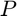
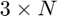
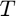
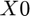
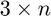

Smooth trajectory generation using control based optimization (LQR)
function [xix,xiy,xiz] = lqrtrajgeneration(P,T,X0,rho,tau1,N12)
Provide the nthe order derivatives of a trajectory interpolation the input points (xi,yi,zi) and times Ti, i = 1,\dots,N
Input arguments -  is an  vector such that $ P = \begin{bmatrix} p_1 & p_2 & \dots & p_N \end{bmatrix}$ \\ -  is a vector with times $ T = \begin{bmatrix} T_1 & T_2 & \dots & T_N \end{bmatrix}$ -  is a  matrix with the initial trajectory position and derivatives X0 = [x(T1) & x'(T1) & \dots & x^{(n-1)(T1)} \\ y(T1) & y'(T1) & \dots & y^{(n-1)(T1)} \\ x(T1) & x'(T1) & \dots & x^{(n-1)(T1)} ] - rho is a weighting factor for the control input -\tau_1 is the sampling period to formulate the problem. -N12 is such that \tau_2 = tau1/N12 is the output sampling period.
output arguments are - xix is a matrix with entries [x(T1) & x(T1+\tau_2) & \dots & x(T1+H\tau_2)\\ x'(T1)& x'(T1+\tau_2) & \dots & x'(T1+H\tau_2)\\ \\ x^{(n)}(T1) & x^{(n)}(T1+\tau_2) & \dots & x^{(n)}(T1+H\tau_2)] where H = \floor{\frac{T_N}{\tau_2}} andxiy and xiz are defined similarly.
Author: d.antunes@tue.nl
Last modification: July, 2018
Contents
initializations
function [xix,xiy,xiz] = lqrtrajgeneration(P,T,X0,rho,tau1,N12)
% ------------------------------------------------------------------------- N = length(T); T = T-T(1); % without loss of generality we set T(1) = 0 h = floor(T(end)/tau1); n = size(X0,2); rk = zeros(3,h+1); Ac = [zeros(n-1,1) eye(n-1);zeros(1,n)]; Bc = [zeros(n-1,1);1]; sysd = c2d(ss(Ac,Bc,zeros(1,size(Ac,1)),0),tau1); A = sysd.a; B = sysd.b; M = [1 zeros(1,n-1)]; R = rho; tau2 = tau1/N12; % ------------------------------------------------------------------------- % -------------------------------------------------------------------------
obtain rk
i = 1; for k = 1:h+1 tk = (k-1)*tau1; if tk > T(i+1) if i+1 == N break; else i = i+1; end end rk(:,k) = P(:,i) + (tk-T(i))/(T(i+1)-T(i))*(P(:,i+1)-P(:,i)); end % ------------------------------------------------------------------------- % -------------------------------------------------------------------------
obtain optimal control inputs
rkx = rk(1,:); rky = rk(2,:); rkz = rk(3,:); x0x = X0(1,:); x0y = X0(2,:); x0z = X0(3,:); [ux] = lqrpreview(A,B,M,R,rkx,x0x); [uy] = lqrpreview(A,B,M,R,rky,x0y); [uz] = lqrpreview(A,B,M,R,rkz,x0z); % ------------------------------------------------------------------------- % -------------------------------------------------------------------------
obtain optimal control inputs
sysdd = c2d(ss(Ac,Bc,zeros(1,size(Ac,1)),0),tau2); Ad = sysdd.a; Bd = sysdd.b; xix_ = zeros(n,h*N12+1); xiy_ = zeros(n,h*N12+1); xiz_ = zeros(n,h*N12+1); xix_(:,1) = x0x; xiy_(:,1) = x0y; xiz_(:,1) = x0z; ux_ = kron(ux,ones(1,N12)); uy_ = kron(uy,ones(1,N12)); uz_ = kron(uz,ones(1,N12)); for kappa = 1:h*N12 xix_(:,kappa+1) = Ad*xix_(:,kappa) + Bd*ux_(kappa); xiy_(:,kappa+1) = Ad*xiy_(:,kappa) + Bd*uy_(kappa); xiz_(:,kappa+1) = Ad*xiz_(:,kappa) + Bd*uz_(kappa); end xix = [xix_;ux_ ux_(end)]; xiy = [xiy_;uy_ uy_(end)]; xiz = [xiz_;uz_ uz_(end)]; % -------------------------------------------------------------------------
end % -------------------------------------------------------------------------
function lqrpreview
Provide the optimal solution to the problem
(\sum_{k=0}^{h-1}\|Mx_k-r_k\|^2 + u_k^\intercal Ru_k +alphah\|Mx_h-r_h\|^2) subject to x_{k+1} = Ax_k+Bu_k, \ \ k \in \mathbb{N}_0
which is given by u_k = K_k x_k + L_k
Input arguments: Matrices A,B,M,R, matrix with reference rk = [r0 r1 \dots rh] initial condition x0 optionally alphah (default value alphah = 1) Output arguments: matrix with optimal control inputs u = [u0 u1 dots uh-1] matrices with gains K(:,:,k) = K_k, L(:,:,k) = L_k
Author: d.antunes@tue.nl
Last modification: July, 2018
function [u,K,L] = lqrpreview(A,B,M,R,rk,x0,alphah)
% parse input -------------------------------------------------------------
if nargin == 6 alphah = 1; end % -------------------------------------------------------------------------
initializations
h = length(rk)-1; n = size(A,1); m = size(B,2); p = size(M,1); P = zeros(n,n,h+1); N = zeros(1,n,h+1); K = zeros(m,n,h); L = zeros(m,1,h); u = zeros(m,h); x = zeros(n,h+1); % ------------------------------------------------------------------------- % -------------------------------------------------------------------------
compute the gains
P(:,:,h+1) = alphah*M'*M; N(:,:,h+1) = -alphah*2*rk(:,h+1)'*M; for k = h:-1:1 P(:,:,k) = M'*M + A'*P(:,:,k+1)*A-A'*P(:,:,k+1)*B*inv(R+B'*P(:,:,k+1)*B)*B'*P(:,:,k+1)*A; K(:,:,k) = -inv(R+B'*P(:,:,k+1)*B)*B'*P(:,:,k+1)*A; N(:,:,k) = -2*rk(:,k)'*M + N(:,:,k+1)*(A+B*K(:,:,k)); L(:,:,k) = -inv(R+B'*P(:,:,k+1)*B)*B'*1/2*N(:,:,k+1)'; end % ------------------------------------------------------------------------- % -------------------------------------------------------------------------
compute optimal trajectory (uk)
x(:,1) = x0; for k = 1:h u(:,k) = K(:,:,k)*x(:,k) + L(:,:,k); x(:,k+1) = A*x(:,k) + B*u(:,k); end % -------------------------------------------------------------------------
end